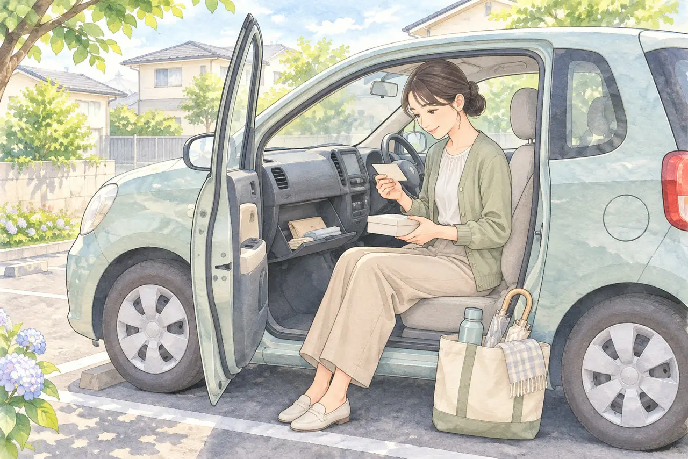
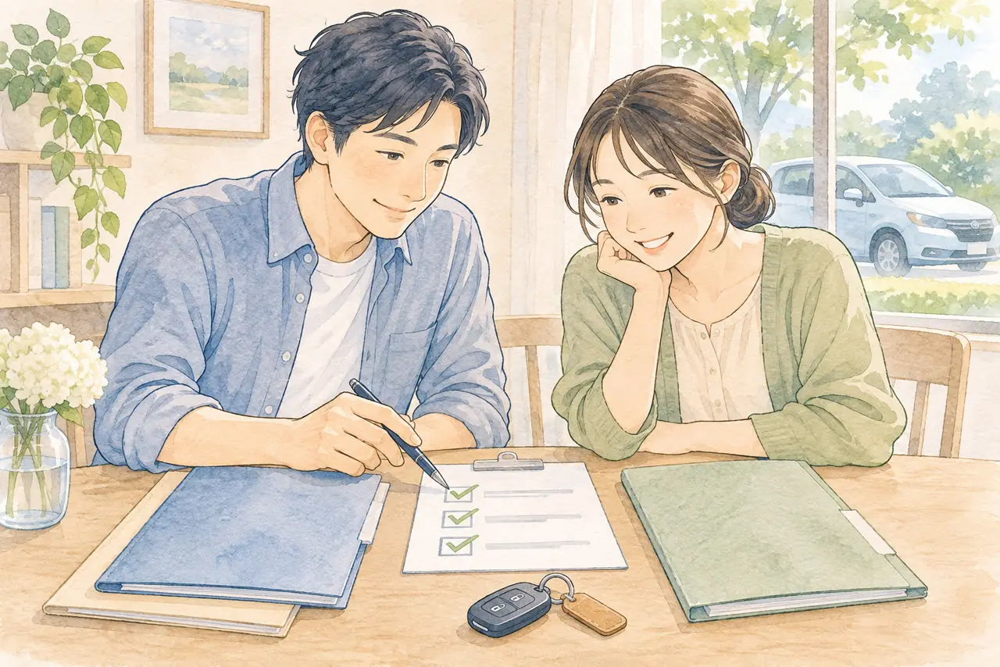

廃車をお願いする前に、準備したい方へ
廃車を頼む前にやることチェックリスト
車内の荷物・ETC・ナビ・保険・駐車場まで、車を渡す前の確認
公開
こんにちは、東京都足立区江北で自動車解体・廃車買取をしている「大崎商店 環七店」です。
この記事の要点
- 車を渡す前に、車の中のものを確認します。荷物、ETCカード、ナビやドライブレコーダーのデータ。
- 保険・駐車場・税金などの契約も、忘れやすいところです。
- いつ何を準備するかを、チェックリストにまとめました。
「廃車をお願いする前に、何をしておけばいい？」
「車の中の荷物や、ETCカードは、どうすればいい？」
「保険や駐車場の解約も、必要なの？」
車を手放す日が決まったら、引き渡しの前に、確認しておきたいことがいくつかあります。忘れやすいのは、車の中のもの（荷物、ETCカード、ナビやドライブレコーダーのデータ）と、契約まわり（保険、駐車場、税金）です。
廃車を頼む前に確認することを、いつ準備すればよいかでまとめました。車の中のもの、保険や駐車場の契約、必要書類、引き渡しの段取りは、チェックリストのあとで詳しくご案内します。
【保存版】廃車を頼む前のチェックリスト
ご自身に当てはまる項目を確認してください。書類が見つからないときも、分かる範囲で依頼先に相談できます。
| いつ | 確認すること | チェック |
|---|---|---|
| 依頼前 | 車検証、自賠責保険証明書、リサイクル券が手元にあるか確認し、見つからないものは依頼時に伝える | □ |
| 依頼前 | 車検証で所有者・使用者と車検の期限を確認する。ローン・リースが残っているときは契約先に相談する | □ |
| 依頼前 | 車が動くかを確認し、置き場所と道幅、引き取り希望日を依頼先に伝える | □ |
| 依頼前 | 駐車場の解約予告期限を調べ、車を出す日と解約日を調整する | □ |
| 依頼前 | 保険会社に解約・中断証明書・車両入替のうち該当する手続きと、必要書類を確認する | □ |
| 依頼前 | 抹消・名義変更の予定と、還付金や返戻金の受け取り方を確認する | □ |
| 引き渡し前 | 印鑑証明書など、依頼先から案内された書類をそろえる | □ |
| 引き渡し前 | 車内の荷物・貴重品、ETCカード、駐車場のカードやリモコンを取り出す | □ |
| 引き渡し前 | 必要な映像を保存し、ドラレコやナビに残るデータを整理する | □ |
| 引き渡し前 | スペアキーや取り付けた用品のうち、何を渡すか確認する | □ |
| 引き渡し後 | 必要な書類を受け取り、保険やETCマイレージなど、該当する手続きを済ませる | □ |
| 引き渡し後 | 駐車場の契約に沿って鍵やカードなどを返す | □ |
① 車の中のものを確認する

車を渡したあとでは、荷物を取り出せなくなることがあります。車内を一度見回して、必要なものを取り出しましょう。
- 荷物・貴重品。トランク、シートの下、ドアポケット、グローブボックス、サンバイザーの裏を見ておきましょう。駐車場のカードやリモコンも確認します。
- ETCカード：ご自身のカードです。車を渡す前に、抜いて、お手元に戻しましょう。
- ETC車載器（本体）。車を渡すときにETCのセットアップ情報を消す手続きは不要です。ただし、一部のETC2.0対応機器には走行履歴などが残るため、ナビや車載器の取扱説明書を確認してください。ETCマイレージサービスに登録している方は、乗り換え時の登録変更など、該当する手続きも確認しましょう。ETC総合情報ポータルサイト／トヨタのETC2.0取扱説明書の例／ETCマイレージサービスの変更手続き
- ドライブレコーダー。事故の記録など、必要な映像は先に保存します。SDカードがあれば持ち帰り、本体に記録が残る機種では取扱説明書に従って消去します。本体を持ち帰りたいときは、取り外す前に依頼先へ伝えてください。トヨタ・ドライブレコーダーの映像消去の案内
- カーナビ・オーディオ。自宅の登録地点、目的地の履歴、Bluetoothの接続情報などを、取扱説明書に従って削除・初期化します。車とスマートフォンを連携させるサービスを使っている場合は、アプリとの連携解除や契約の解約も確認してください。トヨタ・ナビの個人情報の初期化／トヨタ・コネクティッドサービスの手続き例
- スペアキー・リモコンキー：依頼先に、何を渡すかを確認してください。見つからないときは、そのことを先に伝えましょう。
- 車に付けた私物：芳香剤、クリーナー、ドリンクホルダー、取り付けた用品などで、持ち帰りたいものがあれば、外しておきます。
車内に残せるものは、依頼先に確認してください。
車に積んだままの古いタイヤやバッテリーの処分は、「古いタイヤ・バッテリーを処分したい」の記事をご覧ください。
② 保険・税金・契約を確認する
保険や駐車場は、車を渡す日が決まる前でも、必要な書類や解約予告の期限を確認できます。
任意保険
引き渡し前に保険会社へ連絡し、補償を終える日を確認します。自分で運転して持ち込む場合は、その運転が終わるまで補償が続くように調整してください。買い替えなら車両入替、しばらく車に乗らないなら解約と中断証明書の発行について相談しましょう。中断証明書を使って等級を引き継ぐには条件や期限があります。日本損害保険協会・任意の自動車保険／任意保険の中断証明
自賠責保険
自賠責保険の解約を自分で行う場合は、先に保険会社や共済組合へ必要書類と受付方法を確認してください。廃車を確認できる書類がそろったら、契約先で解約手続きをします。返戻金の計算には、解約日から満期までの残り期間が使われます。 残りが1か月未満の場合、返戻金はありません。国土交通省・自賠責保険の解約に関するFAQ／廃車したら自賠責保険は解約できる？返戻金が戻る条件と手続きの手順
自動車税・還付金
自動車税と軽自動車税は、原則として4月1日時点の登録上の所有者に課税されます。ローン会社などが所有権を留保している場合は、買主である使用者に課税されます。納付済みの普通車を年度途中に抹消登録すると、翌月以降の分が還付の対象です。軽自動車税に月割りの還付はありません。東京都主税局・自動車税／足立区・軽自動車税のFAQ
車検時に納める自動車重量税の還付には、適正な解体や、車検の残りが1か月以上あることなどの条件があります。車を渡す前に、いつ、どの手続きをするかと、還付金や返戻金を誰が受け取るかを依頼先に確認してください。国税庁・自動車重量税の廃車還付制度／3月中に廃車した方がいい理由／廃車にするとお金は戻ってくる？
ローン・リースが残っている車
車検証の所有者がローン会社、販売店、リース会社などになっている場合は、先に契約先へ連絡し、所有者の同意や必要書類を確認してください。ローンを払い終えていても、名義が残っている場合があります。ローンが残っている車は廃車できる？
駐車場の契約
駐車場を借りている場合は、引き取り日が決まる前に、解約の何日前までに連絡が必要かを契約書で確認しましょう。そのうえで、契約が終わるまでに車を出せるよう、引き取り日と解約日を調整します。カードや鍵がある場合は、返却方法も確認してください。
③ 書類を確認する

依頼先から書類の有無を聞かれることがあるので、依頼する前に、車検証・自賠責保険証明書・リサイクル券が手元にあるかを確認しましょう。見つからない書類は、最初の連絡で伝えてください。車検証があれば、所有者、使用者、車検の満了日も確認します。電子車検証の所有者や満了日は、車検証閲覧アプリや最新の「自動車検査証記録事項」で確認できます。国土交通省・車検証閲覧アプリ
- 車検証：なくしたときは、「車検証をなくしたけど廃車できる？」の記事をご覧ください。
- 自賠責保険証明書。保険会社や共済組合の連絡先、満期日を確認できます。見つからない場合は契約先に相談してください。
- リサイクル券。見つからない場合は、依頼先に伝えてください。自動車リサイクルシステムで預託状況を調べる方法もあります。自動車リサイクルシステム／リサイクル券をなくしたら？
- 普通車。一時抹消や永久抹消の窓口手続きでは、通常、所有者の印鑑証明書と、実印または実印を押した委任状を用意します。依頼先に手続きの内容と必要な通数を確認してから取得してください。運輸支局・一時抹消登録／運輸支局・永久抹消登録／廃車に必要な書類チェックリスト（普通車）／印鑑証明書は何通？
- 軽自動車。解体返納を所有者以外が行う場合は申請依頼書を使います。用意する書類は手続きによって異なります。軽自動車検査協会・解体返納／軽自動車の廃車に必要な書類
- 名義が違うとき（家族や知人の名義のまま、など）：「名義が家族・知人のままの車を廃車したい」をご覧ください。
普通車の委任状や、名義変更を伴う場合の譲渡証明書は、依頼先が用意することがあります。必要書類は普通車と軽自動車で異なります。新たに取得する書類は、依頼先に確認してから引き渡しまでにそろえましょう。委任状と譲渡証明書の書き方
足立区にお住まいの方は、印鑑証明書を取る場所や税金の窓口を、「足立区で廃車するなら知っておきたいこと」の記事にまとめています。
④ 引き渡しの段取りを決める
依頼先に連絡するときは、次のことを伝えると、話がスムーズです。
- 車の状態：動くか、動かないか。事故にあっていないか。車検は残っているか。
- 車の置いてある場所：住所、駐車場か自宅前か。道の広さ（細い道の奥ではないか）。
- 車検証の情報：所有者と使用者が、ご本人か。ローンが残っているか。
- 希望の日時：駐車場の解約日や、引っ越しの日があれば、一緒に。
自分で運転して持ち込む場合は、ナンバーを付けたままにし、車検と自賠責の有効期間を確認してください。 車検切れや自走できない車は、引き取り方法を依頼先に確認しましょう。車検切れの車の廃車と運び方
保険などの手続きに書類が必要なら、何が使えるかを提出先に確かめ、いつ受け取れるかを依頼先に聞いておきましょう。廃車したあとの書類
引き取りや支払いの流れは、大崎商店の案内もご覧ください。廃車のご依頼から現金お支払いまでの流れ
⑤ 大崎商店の場合
ここからは、足立区の大崎商店の場合をご紹介します。
電話で、伺うこと
お電話では、車検証の情報を伺います。とくに、所有者と使用者が、お電話をいただいた方ご本人か、ローンが残っているかを、お聞きします。車検証があればお電話の前にお手元にご用意ください。見つからない場合は、その旨をお伝えください。所有者がディーラー・販売店の場合も、ご相談をお受けしています。
車の中に残ったものは、車と一緒に処分します
車ごと解体する場合、車の中に残ったものは、基本、取り外さず、車と一緒に処分します。 荷物、ETCカード、ドライブレコーダーやナビのデータなども同じです。必要なものは、引き渡しの前に、取り出しておいてください。 車を渡したあとでは、お返しできません。
ナンバープレートと、書類
- ナンバープレート：一時抹消・永久抹消の手続きのときに、お店が外して、窓口に提出します。 引き取りでも、お持ち込みでも、それまでは付けたままにしてください。
- 委任状・譲渡証明書（普通車）：お店で用意し、記入もお店で行います。 必要な書類は、お電話で、ご案内します。
- 手続き完了の連絡と書類。車の名義を当店へ移していただいた場合は、ご希望に応じて名義変更や抹消登録などの手続きが済んだこと、解体する車は解体が済んだことをお伝えします。電話・ショートメッセージ・メールからご希望の連絡方法をお選びください。名義変更後の書類のコピーや抹消を確認する書類が必要な方も、ご依頼時にお申し出ください。解体の時期は入谷店の作業状況によって変わります。
引き取りと、駐車場の解約日
引っ越しの日や、駐車場の解約日が決まっている場合も、ご相談に応じます。 引き取りのご依頼は、日程を優先して調整しています。ただし、即日や、ご希望の日までの引き取りを、必ずお約束するものではありません。 ご希望の日は、お電話でお伝えください。
動かない車などは、積載車で伺います。積載車は、1台です。細い道の奥にある車や、細い道からの右左折が難しい場所は、引き取りが難しくなることがあります。置いてある場所と、道の広さを、事前にお知らせください。
ご自分の車の場合が気になったら、お気軽にご相談ください。車の状態と置き場所を伺い、ご案内します。
電話で相談する03-3854-4141よくある質問
Q. 車の中に荷物を残したまま、渡してもいいですか？
A. 車を渡したあとでは、荷物を返してもらえないことがあります。引き渡しの前に、すべて取り出しておくのが確実です。残してよいものがあるかは、依頼先に確認してください。大崎商店では、車ごと解体する場合、車の中に残ったものは、基本、取り外さず、車と一緒に処分します。必要なものは、引き渡しの前に、取り出してください。
Q. ETCカードは、抜かなければいけませんか？
A. 車を渡す前に抜いてお持ち帰りください。ETCマイレージサービスを利用している場合は、乗り換え時などに必要な登録変更も確認してください。
Q. ドライブレコーダーやカーナビのデータは、消したほうがいいですか？
A. 必要な映像を保存してから、機器の取扱説明書に従って、残った録画やナビの個人情報を消去してください。機種によってはSDカードと本体の両方を確認します。
Q. 任意保険は、廃車にすれば自動で解約されますか？
A. 自動では解約されません。引き渡し前に保険会社へ連絡し、補償を終える日と、車両入替や中断証明書などご自身に必要な手続きを確認してください。
Q. ナンバープレートは、先に外しておくべきですか？
A. 外さないでください。自分で運転して持ち込むときは、外すと公道を走れません。外すタイミングは、依頼先の案内に従ってください。大崎商店では、手続きのときに、お店が外して窓口に提出します。
Q. 駐車場の解約は、いつすればいいですか？
A. まず契約書で解約予告の期限を確認します。そのうえで、解約日までに車を出せるよう引き取り日を調整してください。解約日が決まっている場合は、ご相談の際にお伝えください。
廃車を頼む前のことも、大崎商店にご相談ください
何から準備すればいいか、迷ったときも、まずはお電話ください。車の状態、置いてある場所、車検証の情報をお知らせいただければ、ご案内します。
大崎商店では、
- 解体費用・手続き代行費用・印紙代は、別請求しません
- 足立区内は、引き取り無料
- 足立区外で買取価格がつかない車は、環七店または入谷店から車で片道約30分圏内は引き取り無料
- 買取価格がつく車は、圏外でも、所在地と車の状態によっては無料で引き取り（事前にご案内します）
- 車種や状態によっては、引き取り当日その場で現金買取も可能
- 車のお持ち込みは、どこからでも歓迎（基本は環七店。日時は、事前にお電話でご相談ください）
ご来店の前に、お電話ください。引き取りなどで外出していることもあり、お電話いただければ、受け入れの可否や、ご案内できる日時をお伝えできます。
大崎商店 環七店
電話：03-3854-4141
〒123-0872
東京都足立区江北7丁目1−3
営業時間：月〜土 10:00〜18:00
休業日：日曜・祝日
環七沿い／舎人ライナー
西新井大師西駅
大崎商店 入谷店
電話：03-3899-2837
〒121-0836
東京都足立区入谷7丁目5−11
営業時間：月〜土 9:30〜17:30
休業日：日曜・祝日・第2土曜
引き取りやご相談のお電話は、環七店がスムーズです。お電話の際は、「廃車の準備について」とお伝えください。車検証をお手元にご用意いただくと、ご案内がスムーズです。
※掲載のイラストはAIで作成したイメージです。実際の店舗・車両・相談風景を撮影したものではありません。